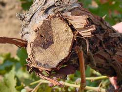
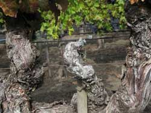
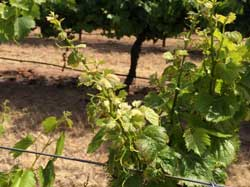
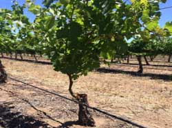
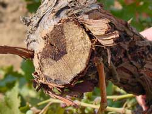
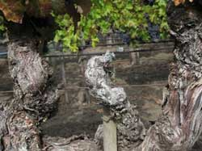
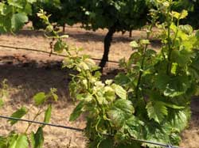
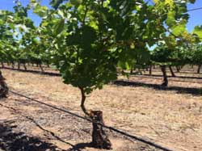

We derive results when preventative practices are adopted in years 3, 5, or 10 to evaluate conditions when vines are fully trained onto the trellis system and winter pruning begins (3 years old), when vines reach maturity (5 years old), and when trunk disease symptoms typically appear in vineyards (10 years old). These years were selected following grower interviews and discussions with viticulture farm advisors to reflect key stages in a vineyard’s lifespan.
The value of a payoff, or cost, expected on some given future date is diminished by the discount rate for each year intervening between the date of payoff and the present. To assume a discount rate of 0% would imply, unrealistically, total indifference between receiving a payoff now and at any other time; in the U.S. a more suitable assumption is 3%, a benchmark found in typical studies of government-financed projects. At this rate, the expectation of receiving $100 in one year has a value approximately equivalent to $97 today.
The additional cost of delayed pruning is assumed to be zero as it does not cost more to shift when this practice is performed. The additional cost per acre for hand-painting TopsinM and double pruning are shown in the tables below.
Additional Annual Cost per acre for Handpainting TopsinM
Change to another regions to see the default settings from the economic analysis here or enter your own numbers in the table below and hit submit to generate results based on our economic analysis of early adoption of trunk disease preventative practices in winegrape vineyards.
 







{kind=link}
{kind=link}